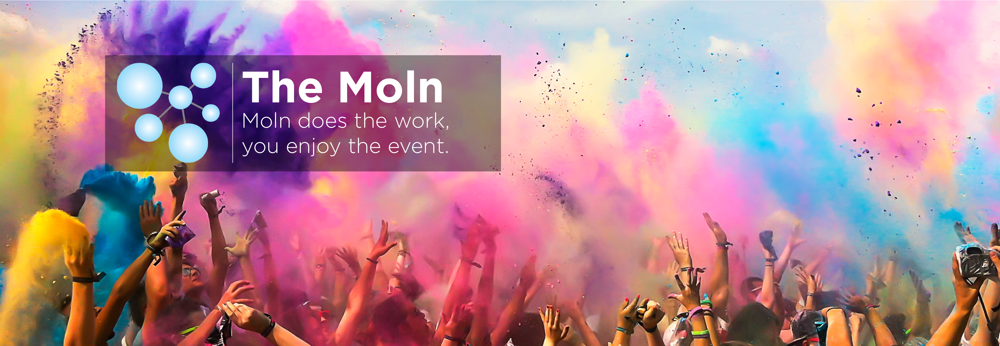

<ion-toolbar class="logo">
    
    <ion-searchbar id="searchbar" mode="md" class="ion-no-padding" type="search" placeholder="Search" debounce="500" (ionBlur)="closeSearchResultPopover()" (ionFocus)="openSearchResultPopover($event)" (ionChange)="onSearchbarChange($event)"></ion-searchbar>
</ion-toolbar>
